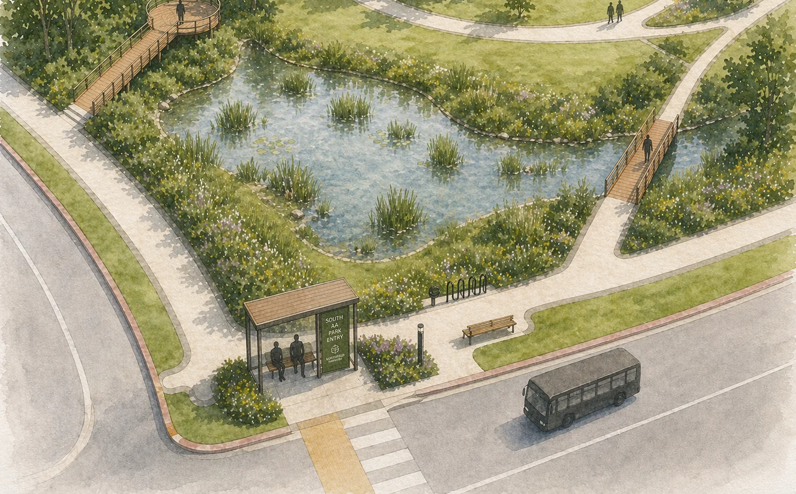
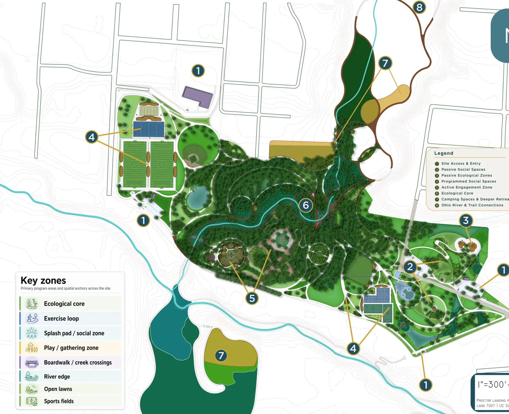

Understory
Design Studio
Home
Work
Skills
About
Résumé
Contact
Landscape Architecture
Every landscape is a story worth the time it takes to tell well.
Matthew Reindl
· Emerging Landscape Architect
· Cincinnati, OH
View Work
Save Contact
Résumé ↓


Proctor Landing Park — master plan
Master plan · DAAPWorks Director's Choice
Recent Work
All projects →
Process
How I work →
01
Inventory + analysis
02
Concept
03
Schematic design
04
Design development
05
Construction documents
06
Construction observation